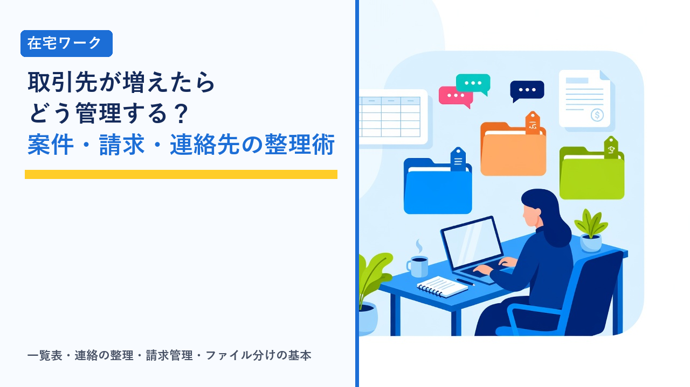

在宅ワークで複数の取引先を抱えるときの管理術：案件・請求・連絡先を混線させない整理の基本
2026-10-29 更新

在宅ワークやクラウドソーシングで仕事が軌道に乗ってくると、取引先が1社から2社、3社と増えていきます。収入が安定する一方で、「A社の納品形式でB社に出してしまった」「どの案件の請求がまだか分からない」「連絡が複数のアプリに分散して見落とした」といった混線が起きやすくなるのもこの段階です。この記事では、複数の取引先を抱えたときに起きやすい問題と、案件・連絡・請求・ファイルを混ぜずに管理するための基本的な整理方法を、客観的な情報としてまとめます。
取引先が増えると起きやすい混線
取引先が1社だけなら、頭の中とメッセージの履歴だけで回ります。2社以上になると、案件の数ではなく「ルールの組み合わせ」が増えるため、記憶に頼る管理が急に難しくなります。よくある混線の例を整理すると、次のようになります。
- 納品形式・ルールの取り違え：A社はWordで、B社はGoogleドキュメントで、C社は専用の管理画面に直接入力、といった違いを混同する。見出しの付け方や文体の指定が取引先ごとに違う場合も同様です。
- 納期の重なりに気づかない：それぞれの取引先とは無理のない納期で合意していても、全体を並べると同じ週に集中していることがあります。
- 連絡の見落とし：A社はクラウドソーシングサイトのメッセージ、B社はチャットツール、C社はメール、と手段が分かれていると、通知の設定次第で返信が遅れます。
- 請求の抜け・二重請求：締め日や請求のタイミングが取引先ごとに違うため、「請求したつもり」「入金されたか確認していない」が起きやすくなります。
- ファイルの混在：資料や納品物を1つのフォルダに入れていると、別の取引先の資料を誤って添付するリスクがあります。機密保持の観点でも避けたい状態です。
- アカウントの使い分けミス：取引先から支給されたアカウントと自分のアカウントを混同し、別の取引先の作業を誤ったアカウントで行ってしまう。
これらは「注意力が足りない」から起きるというより、情報を置く場所が決まっていないことが原因であることがほとんどです。管理の基本は、取引先ごと・情報の種類ごとに「ここを見れば分かる」という場所を1つ決めることにあります。取引先の情報を扱うときの機密保持の基本は在宅ワークの情報管理：取引先のデータを扱うときの機密保持とパスワード管理の基本で整理しています。
案件一覧表に入れる項目
複数取引先の管理で中心になるのは、すべての案件を1枚で見渡せる一覧表です。手帳でも表計算ソフトでもタスク管理アプリでも構いませんが、入れておきたい項目は共通しています。
| 項目 | 内容 | 入れておく理由 |
|---|---|---|
| 取引先名 | 会社名・担当者名・プラットフォーム上の表示名 | 同じ担当者が複数案件を出すこともあるため、案件名と分けて持つ |
| 案件名・内容 | 「○○の記事5本」「月次データ入力」など具体的に | 継続案件は月ごとに行を分けると請求と対応させやすい |
| 契約形態 | 単発・継続・固定報酬・時間単価など | 請求の計算方法と締め日が変わる |
| 納期 | 日付と時刻、初稿か最終納品か | 全取引先を並べて重なりを早く見つけるため |
| 進捗 | 未着手・作業中・納品済み・修正中・検収済みなど | 「納品したが検収待ち」の案件を追い続けるため |
| 報酬額 | 税込・税抜の区別、手数料控除の有無 | 月の見込み収入の把握と、入金額との照合 |
| 請求・入金の状態 | 未請求・請求済み・入金済み、入金予定日 | 請求漏れと入金遅れをなくすため |
| 連絡手段 | サイト内メッセージ・チャット・メールなど | どこを確認すればよいかを迷わないため |
| 備考 | 納品形式、文体、禁止事項などその取引先特有のルール | 取り違えを防ぐための「取引先カルテ」の入口 |
一覧表は「案件を受けたら必ず1行追加する」というルールにしておくと、管理の抜けが減ります。この表が最新であれば、納期の重なりや受けすぎもすぐに分かります。案件の受けすぎを防ぐ目安は在宅ワークで消耗しないための時間管理：案件の受けすぎを防ぐ目安と断り方で解説しています。
連絡手段がばらばらなときの整理
取引先ごとに連絡手段が違うこと自体は変えられません。発注者側が使っているツールに合わせるのが一般的だからです。そのため、「手段を統一する」のではなく、「確認するタイミングと場所を自分の側で決める」ことが現実的な対処になります。
- 通知を集約する：各ツールの通知をスマホとPCの両方でオンにし、確認漏れを減らします。メールは取引先ごとにフィルタやラベルを設定し、受信箱で埋もれないようにします。
- 確認する時間を決める：作業中に通知のたびに反応すると集中が切れるため、朝・昼・夕方など決まった時間にまとめて確認し、それ以外は作業に集中する方法が多く使われています。
- 一覧表に「連絡手段」を書く：どの取引先にどこから返信するかを表に書いておけば、返信先の間違いを防げます。
- サイト内の記録を優先する：クラウドソーシングサイトの案件は、条件変更や納期の合意をサイト内メッセージに残すことが、トラブル時の証拠になります。外部チャットで話した内容も、要点はサイト内に書き残します。
- 返信のテンプレートを用意する：受領連絡・納品連絡・請求連絡など定型のやり取りは、下書きを用意しておくと取引先が増えても負担が増えにくくなります。
チャット・タスク管理・ファイル共有の各ツールの特徴は在宅ワークで使う定番ツール比較：チャット・タスク管理・ファイル共有の選び方で比較しています。
請求と入金を取引先ごとに追う
取引先が増えたときに最も実害が出やすいのが請求の管理です。報酬の受け取り方が取引先ごとに違うため、「何を・いつ・どこに」請求するかを整理しておく必要があります。
| 報酬の受け取り方 | 請求のタイミング | 確認するポイント | 注意点 |
|---|---|---|---|
| クラウドソーシングサイト経由 | 検収（承認）後にサイトが自動処理 | 検収されているか、出金申請が必要か、手数料控除後の額 | 検収待ちのまま放置されている案件に気づきにくい |
| 直接契約（月末締め・翌月払いなど） | 取引先の締め日に合わせて請求書を送付 | 締め日・支払日・請求書の宛名と形式・送付先 | 締め日を過ぎると支払いが1か月ずれることがある |
| 直接契約（案件ごと） | 納品・検収後にその都度請求 | 検収完了の連絡を受けてから請求しているか | 案件数が多いと請求漏れが起きやすい |
| エージェント型サービス経由 | サービスが定める月次の締めに合わせて報告・請求 | 稼働時間の報告期限、支払いサイト | 報告の遅れが支払いの遅れに直結する |
管理の基本は、案件一覧表の「請求・入金の状態」を月に1回は全件見直すことです。あわせて、入金があったら通帳や口座の明細と一覧表を照合し、「入金済み」に更新します。金額が合わない場合は、手数料や源泉徴収の控除があるかを確認します。請求書の書き方やインボイス制度との関係は在宅ワークの請求書・納品書の書き方とインボイス制度の基礎で、記帳アプリの選び方は在宅ワーカーが使いたい確定申告ツール・記帳アプリの選び方で整理しています。取引先別に売上を記録しておくと、確定申告の時期に集計の手間が減ります。
ファイルとアカウントの分け方
資料や納品物の混在は、作業効率だけでなく機密保持の問題にもつながります。取引先が2社以上になった時点で、次のような分け方をしておくのが一般的です。
- 取引先ごとに最上位フォルダを作る：「取引先名／案件名／（資料・作業中・納品済み）」のような階層にし、案件を受けたら同じ構成でフォルダを作ります。
- ファイル名に取引先と日付を入れる：「A社_記事タイトル_20261029.docx」のように統一すると、検索でも見分けがつき、誤添付に気づきやすくなります。
- 支給アカウントは分けて使う：取引先から支給されたメールやツールのアカウントは、ブラウザのプロファイルを分けるなどして、自分や他社のアカウントと同時に開かない工夫をします。
- パスワードは管理ツールで取引先別に整理する：使い回しを避け、契約終了時にはアクセス権の返却や削除を確認します。
- 契約終了後の扱いを決める：契約書や秘密保持契約で、終了後のデータの返却・削除が定められていることがあります。終了した取引先のフォルダは、取り決めに従って整理します。
取引先ごとのルールを記録する
納品形式や文体、締め日といった取引先ごとの違いは、覚えておくのではなく「取引先カルテ」として書き出しておくと、取り違えがなくなります。案件一覧表の備考欄で足りなければ、取引先ごとに1ページのメモを作ります。
| 記録する項目 | 例 |
|---|---|
| 担当者と連絡手段 | 担当者名、サイト内メッセージかチャットか、返信が早い時間帯 |
| 納品形式 | ファイル形式、ファイル名の規則、納品先（メール添付・共有フォルダ・管理画面） |
| 作業のルール | 文体・表記のルール、参考資料の場所、使ってよい素材、禁止事項 |
| 締め日と支払い | 締め日、支払日、請求書の宛名・形式、源泉徴収の有無 |
| 修正の扱い | 修正回数の上限、修正にかかる追加報酬の有無 |
| 過去のやり取りの要点 | 指摘された点、好まれた表現、合意した条件の変更 |
特に「過去に指摘された点」を記録しておくと、同じ指摘を繰り返さずに済み、継続受注につながりやすくなります。単価の見直しを相談するときも、こうした記録があると実績を具体的に示せます。詳しくは在宅ワークの単価交渉と値上げのタイミング：実績の見せ方と伝え方で解説しています。
管理ツールの比較
どのツールで管理するかは、取引先の数と案件の種類で変わります。代表的な方法を比較すると、次のようになります。
| 管理方法 | 向いている状況 | 長所 | 短所 |
|---|---|---|---|
| 手帳・ノート | 取引先2社程度、単発案件が中心 | すぐ始められ、一覧性が高い | 請求・入金の状態の更新や集計には向かない |
| 表計算ソフト（スプレッドシート） | 取引先3社以上、継続案件がある | 案件・請求・入金を1枚で管理でき、月ごとの集計も自動化できる | 更新の習慣がないと形骸化する。通知機能がない |
| タスク管理アプリ | 工程が多い案件、納期が細かく分かれる | 締切の通知、取引先別のボード分け、進捗の見える化 | 請求管理は別に持つ必要がある。設定に手間がかかる |
| 記帳・請求書アプリ | 直接契約が多く、請求書の発行が頻繁 | 請求書の発行から入金管理、確定申告の集計まで一貫して扱える | 案件の進捗管理には向かない。有料プランが必要な場合がある |
| 組み合わせ（表計算＋タスク管理＋記帳アプリ） | 取引先が多く、収入が本業レベル | 進捗・請求・経理をそれぞれ得意なツールで扱える | 二重入力が発生しやすく、更新のルールを決める必要がある |
取引先が少ないうちは表計算ソフト1枚で十分なことが多く、案件数や請求書の発行が増えてきた段階で記帳アプリを追加する、という流れが一般的です。ツールを増やすより、「案件を受けたら一覧表に1行」「入金があったら照合」という最低限の習慣を続けることのほうが、混線の防止には効果があります。
クラウドソーシングサイトを使っている案件は、契約条件・メッセージ・検収状況・報酬の支払いがサイト上にまとまって記録されるため、複数の取引先を抱えていても確認する場所が1つで済みます。直接契約と併用する場合も、サイト経由の案件はサイトの管理画面を、直接契約は自分の一覧表を、と確認先を決めておくと整理しやすくなります。
選び方のポイント
- 情報の置き場所を1つに決める：案件・納期・請求・連絡手段をまとめた一覧表を1枚作り、「案件を受けたら1行追加」を徹底します。記憶に頼らないことが混線防止の基本です。
- 納期は全取引先を並べて確認する：取引先ごとには余裕があっても、全体で同じ週に集中していることがあります。受注前に一覧表を見て、重なりを確認します。
- 連絡は「確認する時間」を自分で決める：手段は取引先に合わせ、確認のタイミングと返信先を自分の側で整理します。条件の合意は記録が残る場所に残します。
- 請求・入金は月1回全件見直す：取引先ごとの締め日と支払いサイトを記録し、入金額と一覧表を照合します。サイト経由の案件は検収待ちのまま止まっていないかを確認します。
- ファイルとアカウントは取引先ごとに分ける：フォルダ構成とファイル名の規則を統一し、支給アカウントはブラウザのプロファイル分けなどで混同を防ぎます。
- 取引先カルテを作る：納品形式・文体・締め日・過去の指摘を取引先ごとに記録しておくと、取り違えが減り、継続受注や単価相談のときにも役立ちます。
取引先が増えて管理の負担が大きくなってきた場合、契約条件の調整や請求のやり取りを間に入って行うエージェント型のサービスを使う選択肢もあります。担当者が窓口になるため連絡先が1つにまとまり、稼働報告と支払いの流れもサービス側で定型化されているのが一般的です。クラウドソーシングとエージェント型の違いはクラウドソーシングとエージェント型サービスの違い比較で整理しています。
よくある質問
取引先が何社くらいになったら、一覧表などの管理を始めるべきですか？
一般的には、取引先が2社になった時点で始めるのが目安とされています。1社だけなら、やり取りの履歴とサイトの管理画面で把握できますが、2社になると納品形式や締め日の組み合わせが生まれ、記憶違いが起きやすくなります。最初は手帳や表計算ソフトに「取引先・案件・納期・報酬・請求状態」の5項目を書くだけで十分で、取引先や案件が増えたら項目やツールを足していく形が、無理なく続けやすい方法です。あとから始めるより、案件が少ないうちに習慣にしておくほうが負担は小さくなります。
取引先ごとに連絡ツールが違います。自分の使いやすいツールに統一してもらえますか？
連絡手段は発注者側の社内ルールやセキュリティ方針で決まっていることが多く、ワーカー側の希望で統一するのは難しいのが一般的です。クラウドソーシングサイトの案件では、サイト外での直接連絡を規約で制限している場合もあります。現実的には、各ツールの通知設定を整え、確認する時間を決め、一覧表に取引先ごとの連絡手段を書いておく方法で対処します。条件変更や納期の合意など重要な内容は、どのツールで話したとしても、記録が残る場所（サイト内メッセージや契約書）に要点を残しておくことが大切です。
複数の取引先の売上は、確定申告のときにどう整理すればよいですか？
確定申告では売上を合計して申告しますが、帳簿には取引先ごと・日付ごとの記録が必要です。案件一覧表の報酬額と入金の記録を取引先別に残しておけば、申告時にそのまま集計の元資料になります。クラウドソーシングサイト経由の報酬は手数料が差し引かれて入金されるため、売上は手数料控除前の額で記録し、手数料は経費として計上するのが一般的な扱いです。取引先によっては源泉徴収されていることもあり、支払調書や明細で確認します。所得の額によって申告が必要かどうかが変わる点は在宅ワークの確定申告、いくらから必要？年間所得別の目安まとめで整理しています。